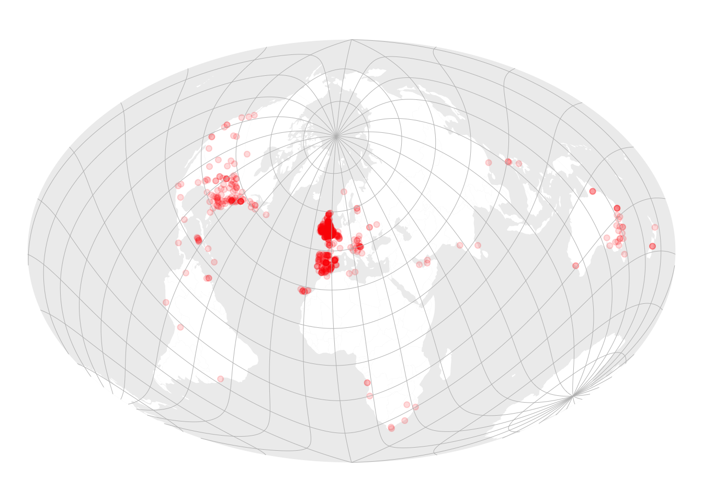

Code
library(sf)
library(tmap)
library(dplyr)
library(stringr)
library(units)Many of the data preparation steps for this figure were initially carried out in QGIS. Here they have been implemented in R only.
To understand why this version is different from the published figure, read on…
The ‘Springfields’ data set was obtained using the following code (shown here but not run) to query the Nominatim geocoder.
library(sf)
library(dplyr)
library(stringr)
query <- "https://nominatim.openstreetmap.org/search"
place <- "Springfield"
excluded_places <- ""
result <- NULL
got_new_results <- TRUE
n_results <- 0
max_n <- 1000
while (n_results < max_n & got_new_results) {
url <- str_flatten(c(
str_glue("{query}?q={place}&"),
"polygon_geojson=1&limit=50&format=geojson&",
str_glue("exclude_place_ids={excluded_places}")
))
download.file(url, "result.geojson", quiet = TRUE, method = "auto")
next_result <- st_read("result.geojson")
got_new_results <- dim(next_result)[1] > 0
if (is.null(result)) {
result <- next_result
} else {
result <- bind_rows(result, next_result)
}
n_results <- dim(result)[1]
excluded_places <- str_flatten(result$place_id, collapse = ",")
Sys.sleep(1)
}
result < result %>%
st_centroid() %>%
st_write(str_glue("all-results-{place}.geojson"))OK, with that done, we can make a map. The degree of difficulty is much increased by choosing a Briesemeister projection. We choose projections like this one not because they are easy, but because they are hard (something like that…). Anyway the published map is actually an oblique Hammer-Aitoff projection, and not the right kind of oblique projection to be a Briesemeister…
Recently, I unearthed a proj string at Michael Minn’s website, in the R code for this page that produces the Briesemeister projection. (However… I suspect that code is no longer entirely valid as the +M parameter included in that string no longer seems to have any effect on the output and the linked proj manual is v4.3, which is a long way out of date.)
Anyway, here’s the string we are using—but even this is not the full story as we will see later.
A world ‘disc’ for the background. Make this by buffering a point and stretching it to an ellipse with the Hammer projection extent.
The world countries must be cut at the Briesemeister ‘cut line’ which is where there is a break in the projection, to avoid anomalies when places are projected that cross the line. We figured out where this line is in other work…
Reading layer `briesemeister-cut-corrected' from data source
`/Users/osullid3/Documents/code/computing-geographically/chapters/chap4/briesemeister-cut-corrected.geojson'
using driver `GeoJSON'
Simple feature collection with 1 feature and 0 fields
Geometry type: LINESTRING
Dimension: XY
Bounding box: xmin: -170 ymin: -89.99058 xmax: 10 ymax: 44.21063
Geodetic CRS: WGS 84A graticule - here we assemble this as linestrings (with many points) because projection of tm_graticules output can be problematic, especially if the projection has cuts other than at ±180° longitude (and even then it can have issues), or as in this case is in any way unusual.
get_meridian <- function(longitude) {
st_linestring(matrix(cbind(longitude, seq(-90, 90, 1)),
ncol = 2, byrow = FALSE)) %>%
st_sfc(crs = 4326)
}
get_meridians <- function(spacing = 10) {
g <- c()
for (lon in seq(-180, 180 - spacing, spacing)) {
g <- c(g, get_meridian(longitude = lon))
}
g
}
get_parallel <- function(latitude) {
st_linestring(matrix(cbind(seq(-180, 180, 1), latitude),
ncol = 2, byrow = FALSE)) %>%
st_sfc(crs = 4326)
}
get_parallels <- function(spacing = 10) {
g <- c()
for (lat in seq(-90 + spacing, 90 - spacing, spacing)) {
g <- c(g, get_parallel(latitude = lat))
}
g
}
graticule <- c(get_meridians(), get_parallels()) %>%
st_sfc(crs = 4326) %>%
# again it must be cut at the Briesemeister breakline
st_difference(cut_line) %>%
st_sfc() %>%
st_sf() %>%
st_transform(bries)As noted, the published map is differently projected that the one we are making here. To get to the Briesemeister proper we have to stretch our oblique Hammer-Aitoff projection. See
Briesemeister W. 1953. A new oblique equal-area projection. Geographical Review 43(2) 260–261. doi: 10.2307/211940.
for details. So let’s also do that here (this really is bonus material). We could use the +proj=affine transformation with appropriate settings, but I’ve had issues getting GDAL and tmap to cooperate with pipeline projected data. Instead, we’ll just use the weird matrix post-multiplication of geometries trick that sf allows to apply the required stretch. Unfortunately this does not update the CRS information, making these data layers useless for almost any other purpose.
stretch_mat <- matrix(c(sqrt(7/8), 0, 0, sqrt(8/7)), 2, 2)
disc <- disc %>%
mutate(geometry = geometry * stretch_mat)
world <- world %>%
mutate(geometry = geometry * stretch_mat)
graticule <- graticule %>%
mutate(geometry = geometry * stretch_mat)
# and not forgetting the Springfields...
springfields <- st_read("all-results-Springfield.geojson") %>%
st_transform(bries) %>%
mutate(geometry = geometry * stretch_mat)For what it’s worth, all these shenanigans are a good example of why more flexibility in the projection architectures of contemporary platforms would be welcome, something discussed in Chapter 3.

# License (MIT)
#
# Copyright (c) 2023 David O'Sullivan
#
# Permission is hereby granted, free of charge, to any person
# obtaining a copy of this software and associated documentation
# files (the "Software"), to deal in the Software without restriction,
# including without limitation the rights to use, copy, modify, merge,
# publish, distribute, sublicense, and/or sell copies of the Software,
# and to permit persons to whom the Software is furnished to do so,
# subject to the following conditions:
#
# The above copyright notice and this permission notice shall be included
# in all copies or substantial portions of the Software.
#
# THE SOFTWARE IS PROVIDED "AS IS", WITHOUT WARRANTY OF ANY KIND, EXPRESS
# OR IMPLIED, INCLUDING BUT NOT LIMITED TO THE WARRANTIES OF MERCHANTABILITY,
# FITNESS FOR A PARTICULAR PURPOSE AND NONINFRINGEMENT. IN NO EVENT SHALL
# THE AUTHORS OR COPYRIGHT HOLDERS BE LIABLE FOR ANY CLAIM, DAMAGES OR OTHER
# LIABILITY, WHETHER IN AN ACTION OF CONTRACT, TORT OR OTHERWISE, ARISING
# FROM, OUT OF OR IN CONNECTION WITH THE SOFTWARE OR THE USE OR OTHER
# DEALINGS IN THE SOFTWARE.© 2023 David O’Sullivan